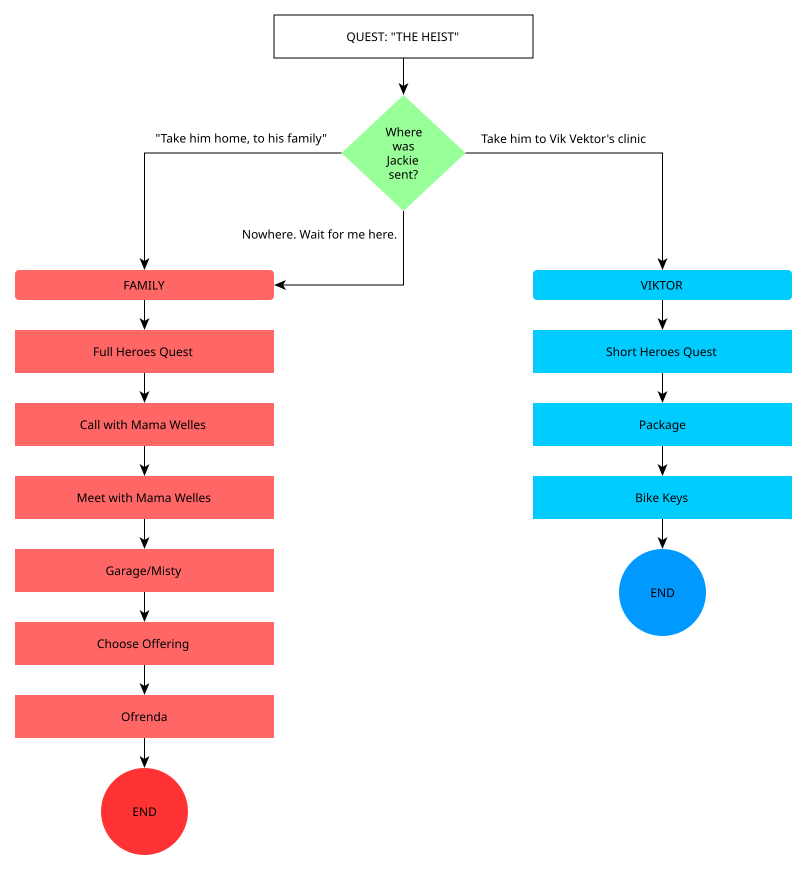
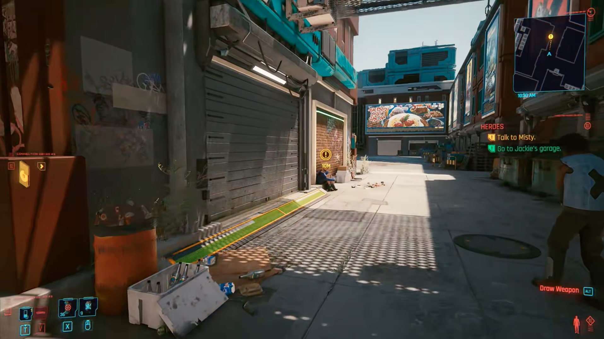
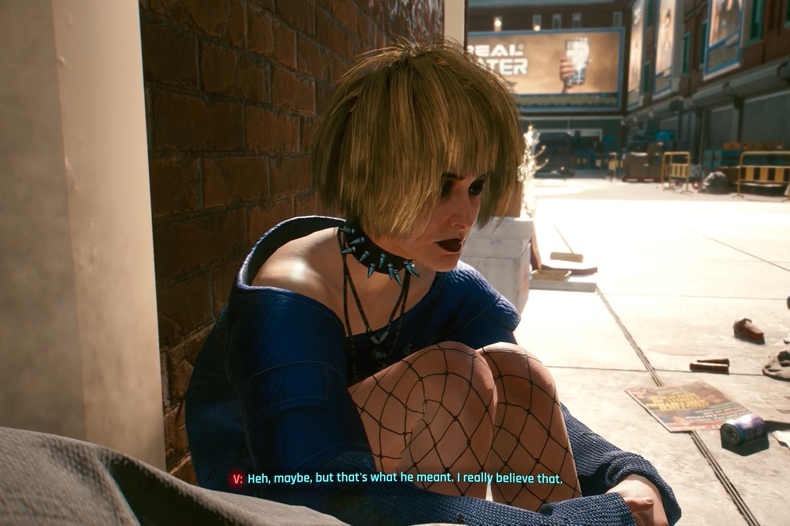
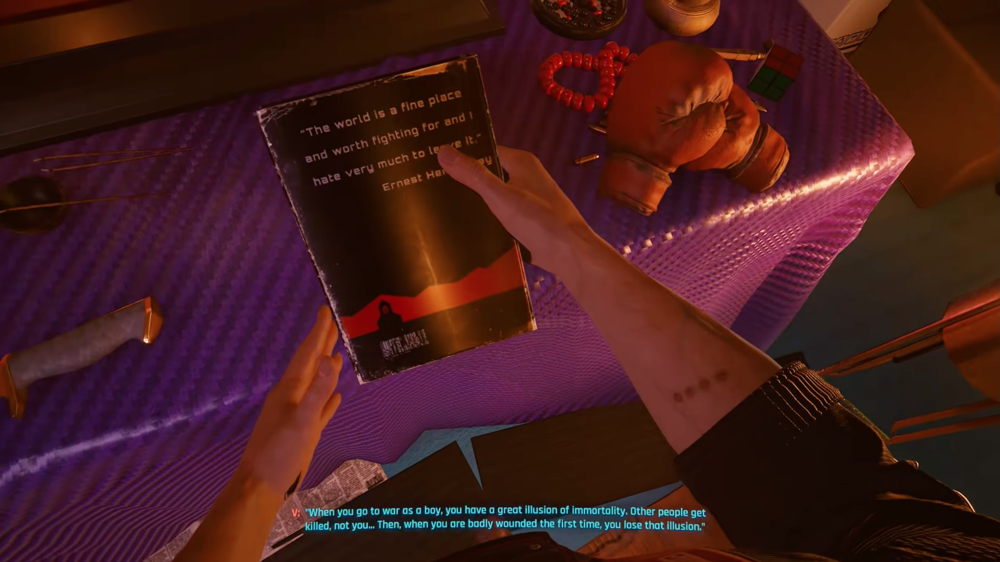
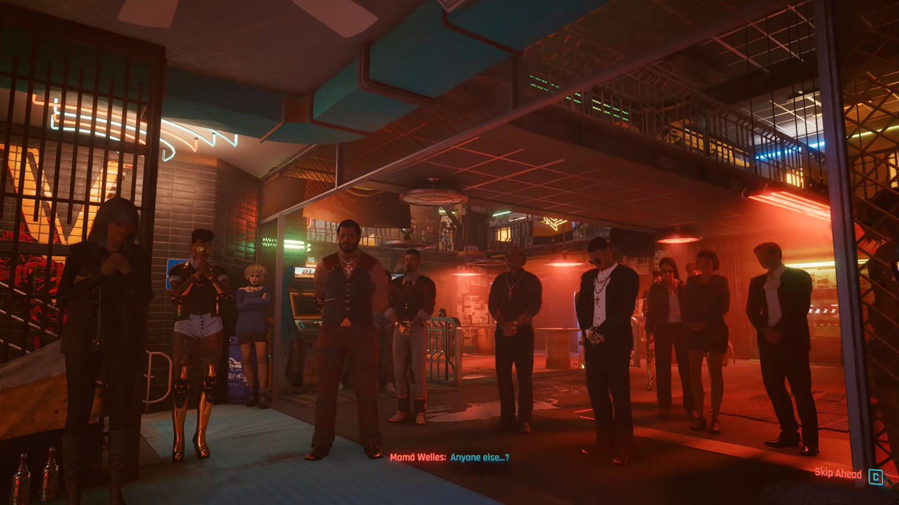
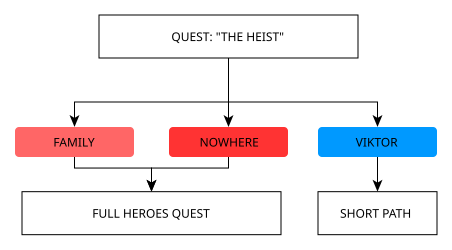
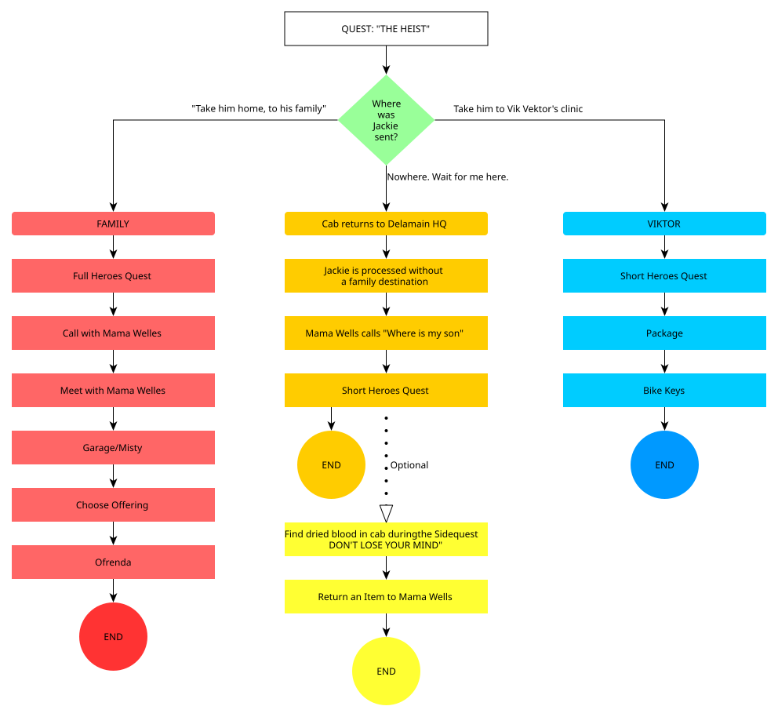

Objects
Personal history becomes something the player can inspect.
Cyberpunk 2077
Quest Deconstruction
How a quiet side quest uses inherited states, environmental storytelling and expressive choice to make grief playable.

01
02
The quest’s largest structural branch is inherited from The Heist, giving an earlier decision consequences beyond its original scene.

03
The garage turns character exposition into exploration. Jackie is reconstructed through his belongings, his space and the people who knew him.

1 2 3Personal history becomes something the player can inspect.
Conversation turns objects into shared memories.
The environment communicates personality without exposition.

04
Not every meaningful choice needs a different ending. Heroes mixes structural, expressive and social agency.

Changes which version of the quest becomes available.
Lets the player decide what part of Jackie they want to remember.
Changes emotional context without requiring another full branch.
05
After the intensity of The Heist, Heroes deliberately removes pressure and gives the player room to process what happened.

06
Design Exploration
The Heist presents three responses for Jackie’s body — but “Nowhere. Wait for me here.” ultimately collapses into the family route. I would turn that apparent choice into a genuine third branch.

Jackie returns to his community.
A larger system takes control.
V intends to come back. V never gets the chance.

Mama Welles calls V — not to invite them to an Ofrenda, but to ask where her son is.
“You knew where his home was.”
During Don't Lose Your Mind, an optional Delamain cab reveals dried blood and a service record: Konpeki Plaza. Destination: None.
V can recover one recognizable item and return it to Mama Welles. There is no replacement Ofrenda — only a smaller, personal act of responsibility.
Core Design Statement The branch does not punish the player for choosing the wrong destination. It gives narrative consequence to choosing no destination at all.
07
“Wait for me.”Back to top ↑
The tragedy is that Jackie died — and V never came back.